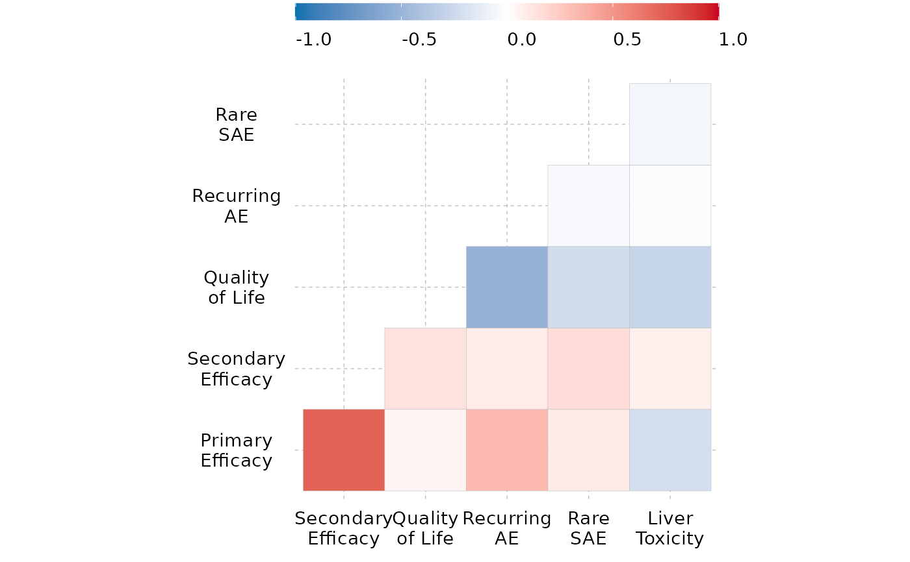

Create a correlogram from a given dataframe
create_correlogram(
df,
diagonal = FALSE,
method = "square",
type_c = "lower",
fig_colors = colfun()$fig10_colors
)A dataframe containing desired variables. Can be inputted as continuous, binary, or ordinal variables. Note: Binary variables must have a value of 0 or 1. Note: Ordinal variables must be formatted as factors.
Allows user to choose to view the correlogram with diagonal entries. Default is FALSE.
Allows user to modify the visualization method of the correlogram. Default is "square".
Allows user to revise the display. Default is "lower".
Allows the user to change the colors of the figure (defaults are provided). Must be vector of length 3, with color corresponding to strength of correlation.
A correlogram.
Different correlation coefficients are calculated based on the nature of the variables: For two continuous variables, the Pearson correlation coefficient is used. For two binary variables, the Phi correlation coefficient is implemented. For one binary and one continuous variable, point biserial correlation is utilized. For two ordinal variables, Spearman rank correlation is utilized. For one continuous and one ordinal variable, a modified Pearson correlation combined with the nonparametric Spearman rank correlation is used. For one binary and one ordinal variable, Glass rank biserial correlation is implemented.
create_correlogram(corr)
